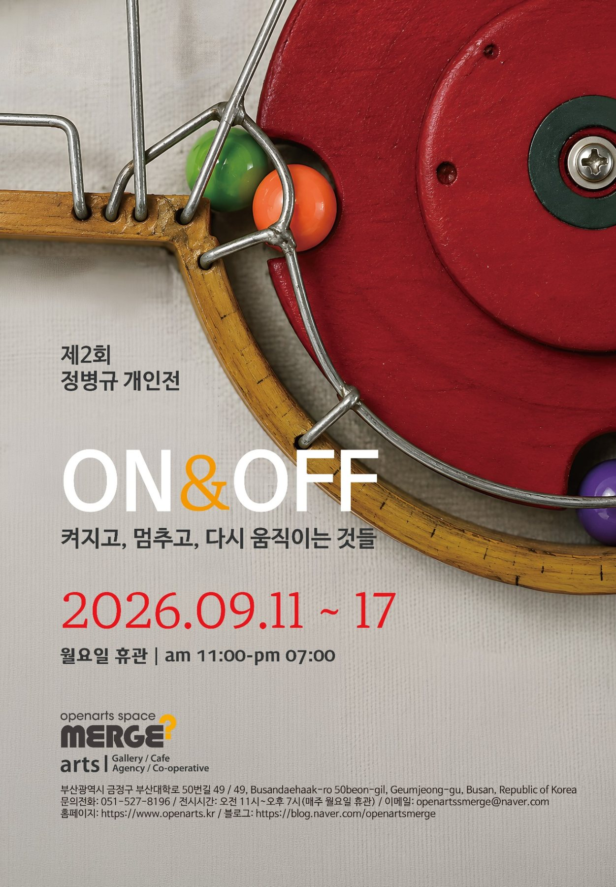
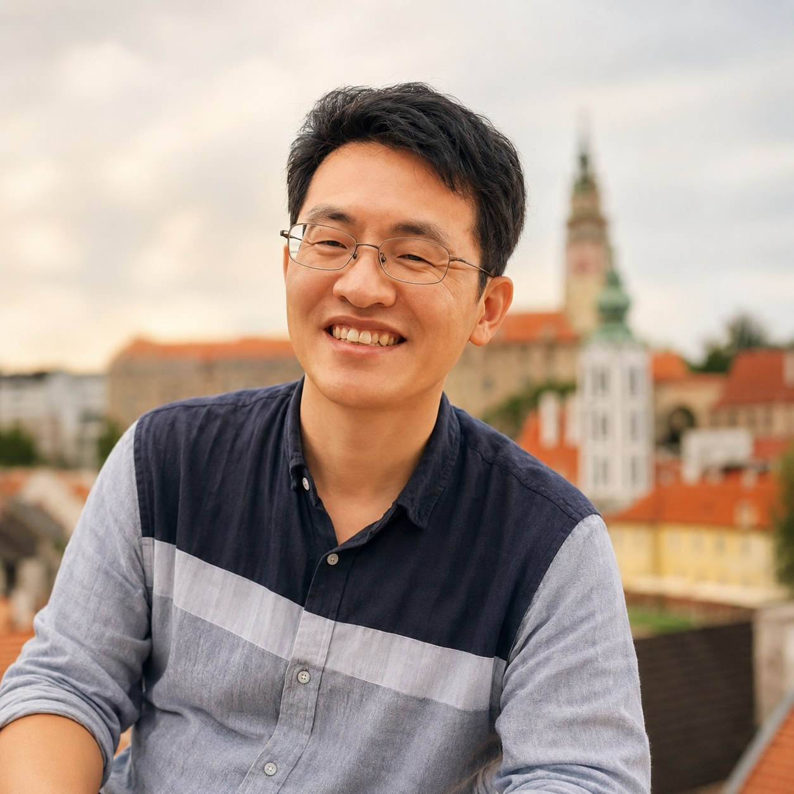

×

켜지고, 멈추고,
다시 움직이는 것들
작품은 완성된 상태로 일방적으로 보여지는 것이 아니라, 관객의 작은 행동을 통해 다시 움직입니다. 스위치를 켜고, 기다리고, 예상하지 못한 움직임을 바라보는 경험을 전시의 일부로 생각합니다.
마블 머신, 미니어처, 오브제 드로잉은 서로 다른 형식을 가지고 있지만 ‘움직임과 구조’라는 공통된 관심에서 연결됩니다.
마블 머신의 구슬, 미니어처의 빛, 오브제 드로잉의 배터리·스프링·전선은 서로 다른 방식으로 켜짐과 꺼짐, 움직임과 멈춤, 그리고 다시 시작되는 가능성을 보여줍니다.

사진과 영상, 드론 이미지 같은 디지털 매체에서 출발해 최근에는 기계의 구조와 움직임을 결합한 작업을 하고 있습니다. 디지털 이미지와 AI를 활용한 작업부터 아두이노, 모터, 센서, 기어, 스프링 등을 이용한 움직이는 오브제까지 다양한 매체와 기술을 활용해 작업해 왔습니다.
최근에는 어린 시절의 놀이와 무언가를 직접 만들고 움직이게 하는 즐거움에 관심을 가지고 있습니다. 단순히 작동하는 기계를 만드는 것보다 그 안에 조형적인 아름다움과 이야기를 담고 관객이 직접 움직임을 경험할 수 있는 작품을 만들고자 합니다.
이번 전시의 제목은 제가 관심을 가져온 ‘움직임을 시작하게 하는 장치’에서 출발했습니다. 고무줄총의 트리거에서 마블 머신의 스위치와 센서까지, 작은 신호와 힘에서 시작된 움직임이 이어지고 멈추고 다시 시작되는 과정을 보여주고자 했습니다.
세 작업은 형식은 다르지만 ‘움직임과 구조’라는 공통점이 있습니다. 마블 머신은 실제 움직임, 미니어처는 빛과 몰입, 오브제 드로잉은 정지된 상태에서의 움직임의 가능성을 보여줍니다.
작품을 일방적으로 보여주는 것보다 관객이 직접 참여하고 변화를 경험하는 것에 의미가 있다고 생각합니다. 스위치를 켜는 아주 작은 행동도 작품과 관객, 작가와 관객이 교감하는 방법이 될 수 있다고 생각합니다.
작품을 어렵게 해석하기보다 가까이 다가가 보고, 스위치를 켜보고, 움직임을 기다려보셨으면 합니다. 예상하지 못한 결과나 멈춤까지도 편하게 즐기면서 작품과 함께 놀아보셨으면 합니다.
제2회 정병규 개인전
ON & OFF / 켜지고, 멈추고, 다시 움직이는 것들
2026.09.11 ~ 17
오픈아츠 스페이스 MERGE
부산광역시 금정구 부산대학로 50번길 49 / 49
전시시간 AM 11:00 – PM 07:00
월요일 휴관